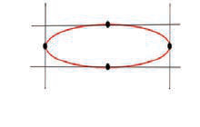
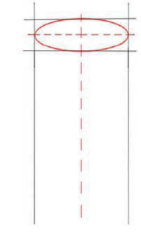
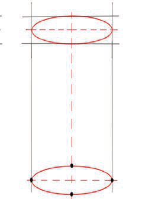
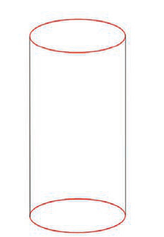

1

2

3

4
Kielelezo namba 3: Hatua za kuchora umbo la mche duara
Maumbo ya mche mraba na mche mstatili
Mche mraba na mche mstatili ni maumbo yanayofanana, isipokuwa mche mraba ni mfupi na mche mstatili ni mrefu. Mche mraba una muonekano wa kasha ambalo pande zote nne zinalingana, wakati mche mstatili una muonekano wa kasha ambalo pande mbili zinalingana na pande nyingine mbili zilizobakia zinalingana. Maumbo haya yanaweza kuwa msingi wa kuchora vitu mbalimbali mfano majengo.
Hatua za kuchora umbo la mche mraba na mche mstatili
Mambo yafuatayo yazingatiwe ili kuchora mche mraba na mche mstatili:
(i)
Chora maumbo mawili ya mraba yaliyoingiliana yenye ukubwa unaolingana ila moja likiwa juu kidogo ya lingine kama linavyoonekana katika hatua ya 1 katika Kielelezo namba 4;
(ii)
Yaunganishe maumbo hayo kwa kuchora mistari minne inayounganisha pembenne za umbo moja na pembenne za umbo lingine kama linavyoonekana katika hatua ya 2 na ya 3;